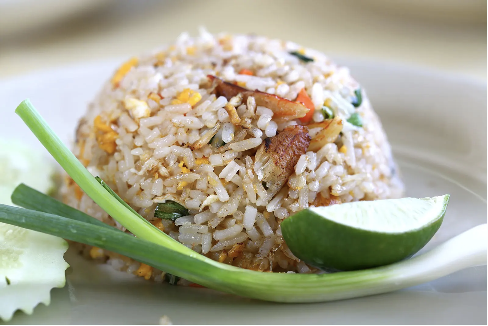

Thailnad Travel
태국의 음식
똠얌꿍
똠얌꿍은 향기로운 레몬그라스, 고추, 양강근, 카피르 라임 잎, 샬롯, 라임즙, 피시소스를 과감하게 혼합한 상큼한 음식이에요. 즙이 풍부한 강새우와 풀버섯이 들어가며 매우면서도 신맛의 국물이 쌀밥과 아주 잘 어울리죠.
솜 땀
매운 그린 파파야 샐러드인 솜땀은 태국 북동부 지역인 이산의 음식이에요. 마늘, 고추, 그린빈, 방울토마토와 채썬 생 파파야를 절구와 절구공이를 사용해서 찧어서 만들어요. 그러면 상당히 독특한 새콤 달콤 매콤한 맛이 나죠. 지역에 따라 땅콩, 마른 새우, 소금에 절인 게를 넣기도 해요. 이 요리는 호불호가 갈릴 수 있는데요. 맛 자체가 별로 마음에 들지 않거나 매운 음식을 못 먹는 분들은 힘들 수도 있어요.
팟타이
팟타이는 태국에서 가장 유명한 요리 중 하나예요. 작고 가늘거나 넓은 국수 한 줌을 바삭바삭한 숙주나물, 양파, 계란과 함께 지글거리는 뜨거운 웍에 볶아내는 요리예요. 이 요리는 피시소스, 말린 새우, 마늘, 샬롯, 붉은 고추, 종려당 같은 조미료로도 맛을 낼 수 있어요. 팟타이에는 일반적으로 해산물, 특히 신선한 새우, 게 또는 오징어가 들어가지만 어떤 곳에서는 닭고기, 쇠고기, 돼지고기를 넣기도 해요. 볶은 국수는 라임 조각, 으깬 구운 땅콩, 숙주나물, 신선한 허브와 함께 접시에 담아내기도 하죠.
카오팟

볶음밥인 카오팟은 방콕에서 점심식사로 많이 먹는 음식이에요. 쌀, 계란과 양파를 기본으로 해서 새우, 게 또는 닭고기부터 두부, 바질, 남은 채소까지 다양한 재료를 선택하여 넣으면 쉽게 멋진 요리가 완성되죠.